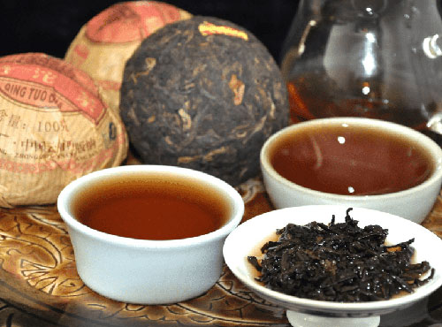
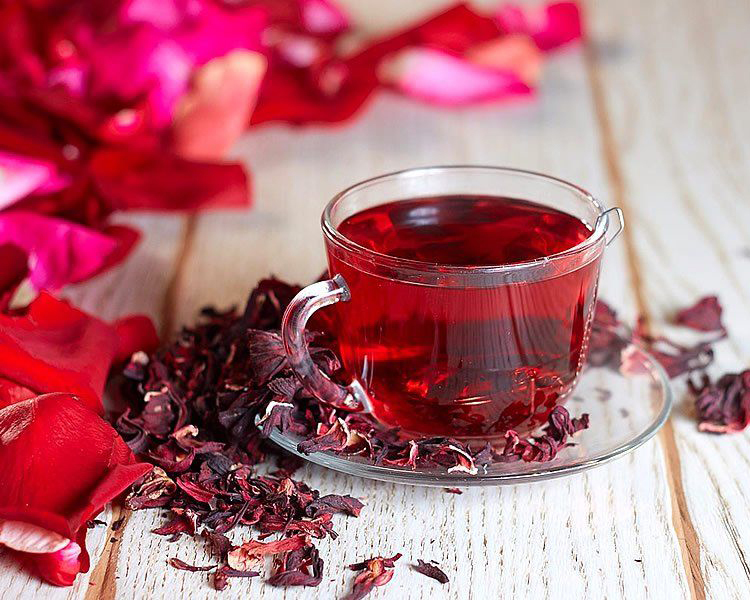

«Лунцзин»

• Улучшает обмен веществ
• Содержит витамин С
«Эрл Грей»

«Молочный»

«Шу Пуэр»

«Луговая свежесть»


Снижает давление
Богат витамином С
| Сорт чая | Изображение | Описание | Свойства | Цена (за 100г) |
|---|---|---|---|---|
| Зелёный чай «Лунцзин» |
|
Знаменитый китайский чай с нежным вкусом и ароматом. Собирается ранней весной. |
• Богат антиоксидантами • Улучшает обмен веществ • Содержит витамин С |
450 руб. |
| Чёрный чай «Эрл Грей» |
|
Классический чёрный чай с бергамотового масла. Бодрящий аромат и насыщенный вкус. | Бодрит, улучшает концентрацию, согревает в холод | 380 руб. |
| Улун «Молочный» |
|
Полуферментированный чай с нежным сливочным вкусом. Многократно заваривается. | Омолаживает, нормализует давление | 650 руб. |
| Пуэр «Шу Пуэр» |
 |
Постферментированный чай с землистым вкусом. Выдерживается годами. | Очищает организм, снижает холестерин | 890 руб. |
| Травяной сбор «Луговая свежесть» |
|
Смесь луговых трав: мята, чабрец, душица, ромашка. Успокаивает и расслабляет. | 320 руб. | |
| Каркаде |
 |
Чай из цветков гибискуса. Рубиновый цвет, кисловатый вкус. |
Укрепляет сосуды Снижает давление Богат витамином С |
290 руб. |
| 🍵 Все чаи можно попробовать в нашем чайном клубе. Дегустации по выходным! 🍵 | ||||
| * Возможна покупка в розницу и оптом. Скидки постоянным клиентам. | ||||